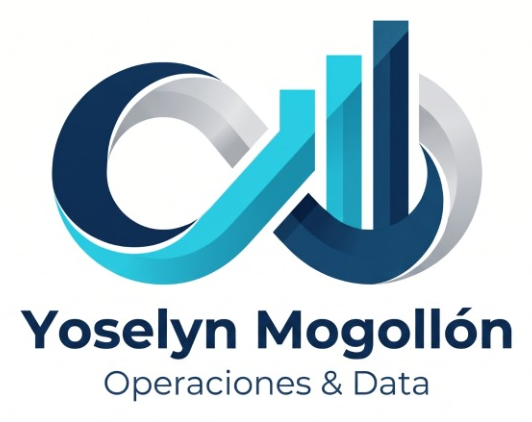

Procesos · Datos · Automatización
Diseño cotizadores, flujos de datos y automatizaciones a la medida de tu negocio, con reglas claras, datos verificables y una persona que aprueba antes de que algo llegue a tu cliente.
Conversemos sobre tu proceso Ver un caso real
Muchos negocios responden a sus clientes con procesos que dependen de la memoria de una persona, de chats dispersos y de hojas de cálculo que nadie revisa. El resultado se repite:
Entre buscar precios, revisar datos y preguntar, la cotización tarda días y el cliente se enfría.
Cada propuesta depende de quién la hace. No hay criterios escritos ni forma de revisar el cálculo.
Equipos contados dos veces, unidades mezcladas, listas de precios vencidas. Los errores llegan hasta el cliente.
Preguntarle a una IA sin reglas ni datos ordenados produce respuestas que suenan bien, pero que pueden ser inventadas.
Cada negocio es distinto, pero el camino es el mismo.
Entiendo cómo se cotiza hoy: quién, con qué datos, cuánto tarda y dónde se cometen errores.
Convertimos el criterio de tu equipo en reglas escritas: márgenes, condiciones, límites técnicos y quién aprueba.
Construyo el flujo: captura de datos (incluso desde el teléfono), cálculo verificable y documento listo para el cliente.
Registramos tiempos y resultados para saber, con datos, cuánto mejoró el proceso.
Soluciones a la medida, con herramientas accesibles para negocios que están creciendo.
Reglas de tu negocio, cálculo verificable, documento PDF con tu marca y aprobación antes de enviar.
Formularios en el teléfono conectados a una base de datos, para no depender de una computadora ni de mensajes sueltos.
Indicadores claros sobre tiempos de respuesta, ventas y operación, con datos depurados.
Catálogos, listas de precios y bases de clientes ordenados y listos para usar.
Caso real · Sistemas de respaldo eléctrico
Una empresa de sistemas de respaldo eléctrico en Venezuela armaba cada cotización a mano, con listas de precios y consultas sueltas a la IA. Diseñamos:
Tiempo desde tener los datos del cliente hasta la cotización, en un caso real. El tiempo de antes es un estimado; el de después se midió. La medición continúa con más casos.
Cuéntame tu proceso actual. Te digo con honestidad si una herramienta a la medida te ayudaría y por dónde empezar.
Escríbeme por LinkedIn Ver portafolio